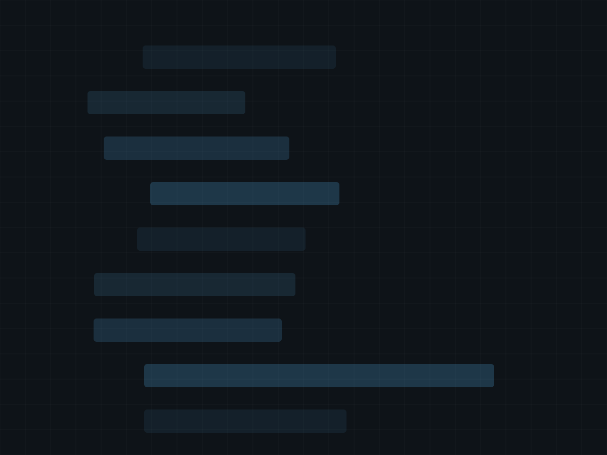

Randy Van't Hof incorporated this shop in 1989. Residential basements, farm slabs and commercial floors — same crew, same standard, whether the job is in town or four counties over.
Get On The Pour ScheduleResidential, agricultural and commercial — the three sides of the business since day one.
Forms set, steel tied, walls poured and stripped. Basements and frost walls for new builds and additions.
Garage floors, basement floors, shop slabs. Screeded flat and finished so it drains where it should.
Feedlot slabs, bunker walls, machine shed floors and cattle alleys. Farm work is a third of what we do.
Tear out the old one, grade it, pour it, saw the joints on time so it cracks where we put the line.
Shop and warehouse floors for contractors and building owners inside the sixty-mile radius.
Front steps, sidewalks, stamped or broom-finished patios. Small work still gets a real crew.
Incorporated April 1989. Still answering the same phone number.



This is where your job photos go. Randy has thirty-seven years of pours on his phone. This is where five of them would sit.
Roughly sixty miles out from the shop on North Main.
About sixty miles from Sioux Center. That covers Sioux, Lyon, O'Brien and Plymouth counties comfortably, and we go further for larger agricultural work.
Yes — feedlot slabs, bunker walls, machine shed floors and alleys. Agricultural work has been part of this business since 1989.
Depends on the season. Call and we'll tell you straight where you'd land on the schedule instead of guessing to be polite.
Yes. Removal, grading and disposal are part of the quote unless you tell us you've already got it handled.
Both, plus agricultural. A basement in town and a shop floor for a contractor are the same week for us.
Call the shop or leave the details and we'll call you back.
Straight through to the shop in Sioux Center.
(712) 722-3630Van't Hof Concrete, Inc. · Sioux Center, IA
Hi — Van't Hof Concrete. Poured walls, flatwork and farm concrete around Sioux Center since 1989. What are you looking to pour?